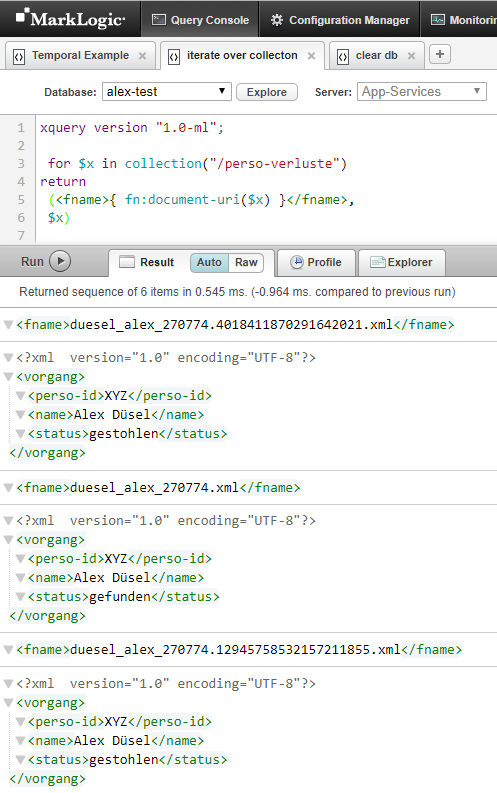

Anlegen des Testszenarios auf der ML Konsole
Die Codefragmente aus dem vorherigen Kapitel sind folgend für eine ML Konsolensitzung aufbereitet:
- Anlegen der temporalen Properties: [[code:validStart]], [[code:validEnd]], [[code:systemStart]], [[code:systemEnd]]
- Anlegen der Indizes zum Suchen über Zeitbereiche: [[code:database-range-field-index("dateTime", "systemStart",...]]
- Anlegen der zwei Zeitachsen [[code:system]] und [[code:valid]][[xe1:Temporale Zeitachsen]]
- Anlegen der temporalen Collection [[code:/perso-verluste]]
- Anlegen des Originals am 1.2.2019
- Aktualisierung am 6.2.2019
xquery version "1.0-ml";
import module namespace admin =
"http://marklogic.com/xdmp/admin" at "/MarkLogic/admin.xqy";
import module namespace temporal =
"http://marklogic.com/xdmp/temporal" at "/MarkLogic/temporal.xqy";
declare namespace local = 'local:';
declare variable $db := "alex-test";
declare function local:create-temporal-fields()
{
let $config := admin:get-configuration(),
$dbid := xdmp:database($db)
return
try {
admin:save-configuration(
admin:database-add-field($config, $dbid,
admin:database-metadata-field("validStart"))),
admin:save-configuration(
admin:database-add-field($config, $dbid,
admin:database-metadata-field("validEnd"))),
admin:save-configuration(
admin:database-add-field($config, $dbid,
admin:database-metadata-field("systemStart"))),
admin:save-configuration(
admin:database-add-field($config, $dbid,
admin:database-metadata-field("systemEnd")))
} catch ($err) {}
};
declare function local:create-range-index-fields()
{
let $config := admin:get-configuration(),
$dbid := xdmp:database($db)
return
try {
admin:save-configuration(
admin:database-add-range-field-index($config, $dbid,
admin:database-range-field-index("dateTime", "validStart", "", fn:true()))),
admin:save-configuration(
admin:database-add-range-field-index($config, $dbid,
admin:database-range-field-index("dateTime", "validEnd", "", fn:true()))),
admin:save-configuration(
admin:database-add-range-field-index($config, $dbid,
admin:database-range-field-index("dateTime", "systemStart", "", fn:true()))),
admin:save-configuration(
admin:database-add-range-field-index($config, $dbid,
admin:database-range-field-index("dateTime", "systemEnd", "", fn:true())))
} catch ($err) {}
};
declare function local:create-axes()
{
try {
let $t1 := temporal:axis-create(
"valid",
cts:field-reference("validStart", "type=dateTime"),
cts:field-reference("validEnd", "type=dateTime")),
$t2 := temporal:axis-create(
"system",
cts:field-reference("systemStart", "type=dateTime"),
cts:field-reference("systemEnd", "type=dateTime"))
return ()
} catch ($err) {}
};
declare function local:create-temporal-collection()
{
try {
let $t:= temporal:collection-create("/perso-verluste", "system", "valid")
return ()
} catch ($err) {}
};
declare function local:insert-original()
{
let $root :=
<vorgang>
<perso-id>XYZ</perso-id>
<name>Alex Düsel</name>
<status>gestohlen</status>
</vorgang>,
$options :=
<options xmlns="xdmp:document-insert">
<metadata>
<map:map xmlns:map="http://marklogic.com/xdmp/map">
<map:entry key="validStart">
<map:value>2019-02-01T08:23:11</map:value>
</map:entry>
<map:entry key="validEnd">
<map:value>9999-12-31T11:59:59Z</map:value>
</map:entry>
</map:map>
</metadata>
</options>
return temporal:document-insert("/perso-verluste",
"duesel_alex_270774.xml",
$root, $options)
};
declare function local:insert-update()
{
let $root :=
<vorgang>
<perso-id>XYZ</perso-id>
<name>Alex Düsel</name>
<status>gefunden</status>
</vorgang>,
$options :=
<options xmlns="xdmp:document-insert">
<metadata>
<map:map xmlns:map="http://marklogic.com/xdmp/map">
<map:entry key="validStart">
<map:value>2019-02-06T08:00:00</map:value>
</map:entry>
<map:entry key="validEnd">
<map:value>9999-12-31T11:59:59Z</map:value>
</map:entry>
</map:map>
</metadata>
</options>
return temporal:document-insert("/perso-verluste",
"duesel_alex_270774.xml",
$root, $options)
};
( xdmp:invoke-function(local:create-temporal-fields#0),
xdmp:invoke-function(local:create-range-index-fields#0),
xdmp:invoke-function(local:create-axes#0),
xdmp:invoke-function(local:create-temporal-collection#0),
xdmp:invoke-function(local:insert-original#0),
xdmp:invoke-function(local:insert-update#0))
NOTE
Beachtenswert ist hier,
- dass die einzelnen Schritte als Funktion über [[code:xdmp:invoke-function]] aufgerufen werden. Dieses Konstrukt wird normalerweise benutzt um eine Funktion [[link]]anonym[[fn:https://de.wikipedia.org/wiki/Anonyme_Funktion*Wikipedia Artikel zum Begriff Anonyme Funktion]] zu deklarieren und als Transaktion[[xe1:Transaktionen]] aufzurufen. Marklogic bietet [[link]]weitere Möglichkeiten[[fn:https://docs.marklogic.com/guide/app-dev/transactions*Arbeiten mit Transaktionen in MarkLogic Server]] transaktional zu arbeiten.
- Um die 5 Tage zwiachen Verlustmeldung und Wiederauffinden zu simulieren, wurde zwischem dem Anlegen der Dokumente ein [[code:xdmp:sleep]] Statement eingefügt.
Lassen wir diese Query auf einer frischen Datenbank laufen, so erhalten wir die folgendes Ergebnis:
Nach der Ausführung obiger Query gibt es in der DB drei Dokumente, das Orginal, das Split-Dokument und die Aktualisierung. Das Split-Dokuments und das Originals sind als Vorgänger mit Suffix gekennzeichnet.
